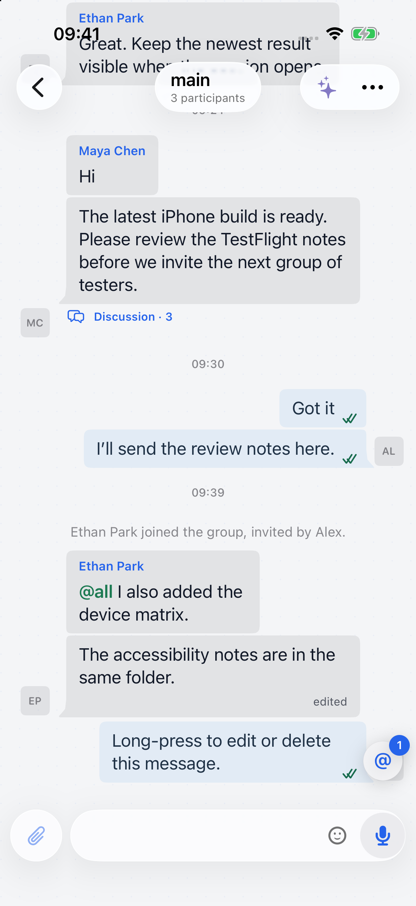
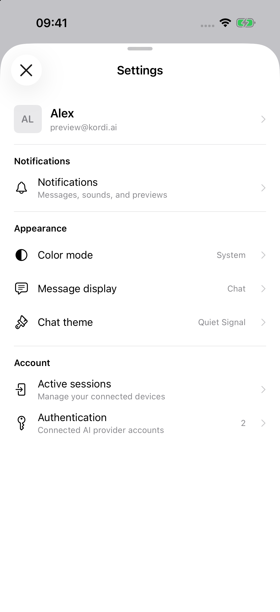

Conversation

Compact, tappable conversation identityTitle and context share one capsule. Messages scroll behind separate glass controls, without a header band.
Inspired by the iPhone interfaces in Slack and Telegram.

Compact, tappable conversation identityTitle and context share one capsule. Messages scroll behind separate glass controls, without a header band.

More useful information in less spaceSmaller 15 pt labels, 12 pt supporting text, tighter sections, and visible preference values. Tap the profile to edit it.